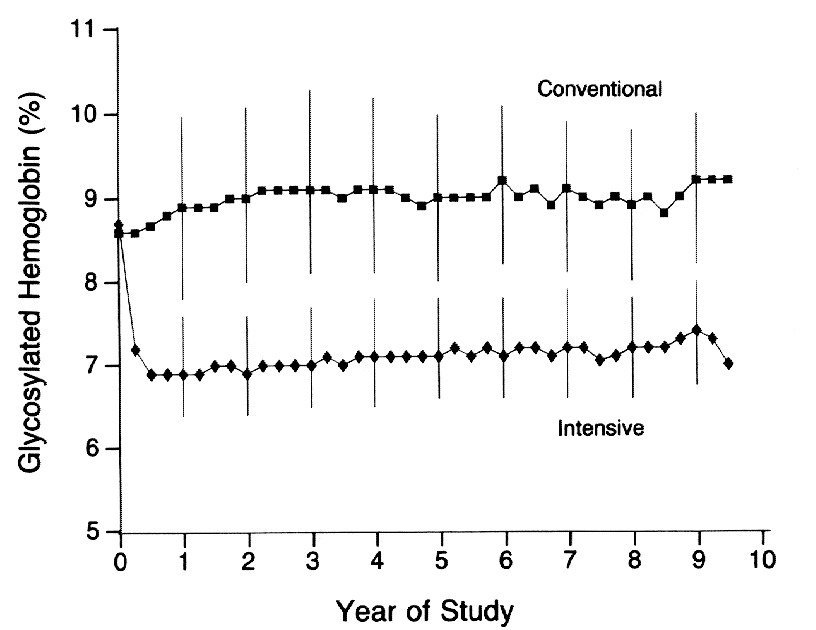

Prevention of Chronic Complications of Diabetes
- DCCT/UKPDS: tight glucose control cuts microvascular complications significantly, but didn't significantly cut macrovascular events or mortality during the trial itself — that benefit only showed up years later (the "legacy effect").
- BP ≤ 130/80 (ACEi/ARB first-line) and LDL < 2.0 (statin first-line) meaningfully reduce complications. ACEi/ARB is also indicated once microalbuminuria appears, regardless of the BP reading.
- Foot care and annual eye screening are simple, high-value, easy-to-forget prevention steps.
Learning Objectives
- Summarize preventive strategies for DM complications related to glucose control.
- Summarize the preventive efficacy of BP control, lipid control, and lifestyle interventions.
Landmark Trials: DCCT & UKPDS
DCCT (1993, n=1441, type 1 diabetes) randomized patients to intensive therapy (≥3 daily injections or a pump, target A1c < 7%) vs. conventional therapy (1–2 injections/day, target A1c < 10%) over 6.5 years.

- Intensive therapy cut retinopathy risk 76% (primary prevention) and 54% (slowed progression in those who already had it), clinical neuropathy 60%, and microalbuminuria/albuminuria 39–54%.
- Macrovascular events weren't significantly reduced during the trial itself — but hypoglycemia risk rose 2–3×.
UKPDS 33 (1998, n=3867, newly-diagnosed type 2 diabetes) compared intensive therapy (insulin or sulfonylureas, targeting FPG < 6 mmol/L — achieved A1c 7.0%) against diet alone (achieved A1c 7.9%) over 10 years.
- 25% reduction in microvascular complications; the glucose–complication relationship was linear, so any improvement in control helps, even short of target.
- No significant effect on macrovascular disease or all-cause mortality from glucose control alone during the trial itself — that benefit only showed up later, in the legacy-effect follow-up. Hypoglycemia occurred in 2.3% of patients per year.
- A related UKPDS BP sub-study found that keeping BP under 144/82 (a separate, less-tight target than today's) reduced strokes, DM-related death, heart failure, microvascular complications, and vision loss — in T2DM, BP control pulls its own weight independent of glucose.
The "legacy effect" (metabolic memory): years after both trials ended and glycemic control in the two arms converged, long-term follow-up still showed lasting benefit from the original intensive period — DCCT's intensive group had 42% fewer adverse CV outcomes and 33% lower all-cause mortality; UKPDS's intensive group had 24% less microvascular disease and 17% lower DM-related death. Early tight control leaves a benefit that persists even after control equalizes.
Bottom line for glucose: aim for BG as close to normal as achievable without serious hypoglycemia — any improvement helps, regardless of whether target is reached.
BP & Lipid Targets
| Target | Goal | First-Line | Benefit |
|---|---|---|---|
| Blood pressure | ≤ 130/80 mmHg | ACE inhibitor (e.g. ramipril) or ARB (e.g. candesartan) | ↓ CV events, renal impairment, retinopathy |
| LDL | < 2.0 mmol/L | Statin (e.g. rosuvastatin, atorvastatin) | ↓ CV events, possibly retinopathy |
An ACE inhibitor/ARB is also indicated once microalbuminuria is present, regardless of the BP reading — it's renoprotective on its own, not just through lowering blood pressure.
Two drug classes add benefit beyond glucose-lowering itself: SGLT2 inhibitors (e.g. empagliflozin) for cardiovascular and renal protection, and incretin analogues (e.g. liraglutide) for cardiovascular protection.
Preventing Coronary Artery Disease
| Secondary Prevention (known CAD) | Primary Prevention (no known CAD) |
|---|---|
| Statin + ACE/ARB + BP/LDL control + antiplatelet (ASA 81mg ± clopidogrel) | Statin if age > 30 & DM duration > 15yr, or age ≥ 40 regardless. ACE/ARB if age ≥ 55 with another CAD risk factor, or if renal disease. |
Lifestyle Interventions & Foot Care
- Home blood glucose and blood pressure monitoring.
- Smoking cessation — reduces MI, stroke, PAD, and possibly retinopathy.
- Activity and weight loss if BMI is high — lowers both BP and BG.
- Annual ophthalmology screening for retinopathy.
- Foot care: daily self-exam (don't self-treat calluses), comfortable shoes, chiropody referral if vision-impaired. Office exam checks for calluses/ulcers, pedal pulses, and a monofilament test.
Case: Mr. X, Diagnosis to 30 Years Later
30-Year-Old Man, New Type 2 Diabetes
At diagnosis: BMI 35, BG 15 mmol/L, A1c 14%, normal creatinine, LDL 4.0 mmol/L, triglycerides 10 mmol/L. Plan: dietitian referral (low-fat, high-fibre, portion control), diabetes education nurse, optometrist referral, BP target < 130/80, A1c/lipids/renal function every ~3 months. Started on metformin (would have gone straight to insulin if very symptomatic — polydipsia, polyuria, yeast infections, weight loss). Medication needs predictably escalated over the following years.
Then, one day: a day of vomiting after 2 days of fever and diarrhea (his grandson had the same bug) — home BG read "HI." In the ED: BG 35 mmol/L, creatinine 300 μmol/L (baseline ≤ 100), bicarbonate 10, pH 7.2, moderate ketones — DKA. Treated with IV fluids and IV insulin, monitoring BP/BG/electrolytes/anion gap/pH, transitioning to subcutaneous insulin once eating and the gap closed. On discharge: insulin (often 4 injections/day), oral agents continued except the SGLT2 inhibitor — likely a contributor to precipitating the DKA in the first place.
Thirty years later: sudden vision loss in one eye and burning foot pain at night; BP 180/90 on repeated checks; A1c 7.5%. Optometry found proliferative retinopathy with retinal hemorrhage (urgent referral for vitrectomy and laser); the foot exam found sensory neuropathy with diminished pulses (footwear review, chiropodist or specialized foot clinic depending on severity).
Adapted (not reproduced verbatim) from Dr. H. Z. Hashmi (Endocrinology & Metabolism, St. Joseph's Health Care, London), "Prevention of Chronic Complications of Diabetes Mellitus," acknowledging Dr. Ruth McManus' slide deck.